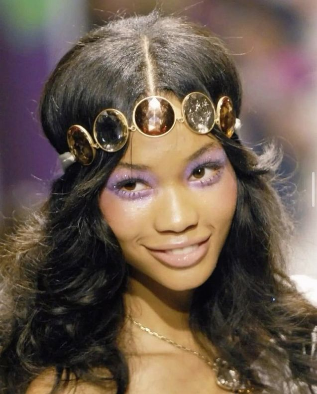
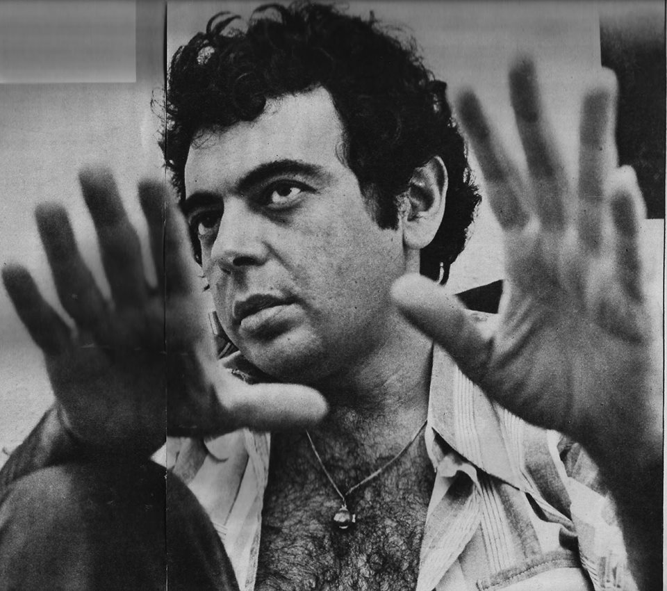
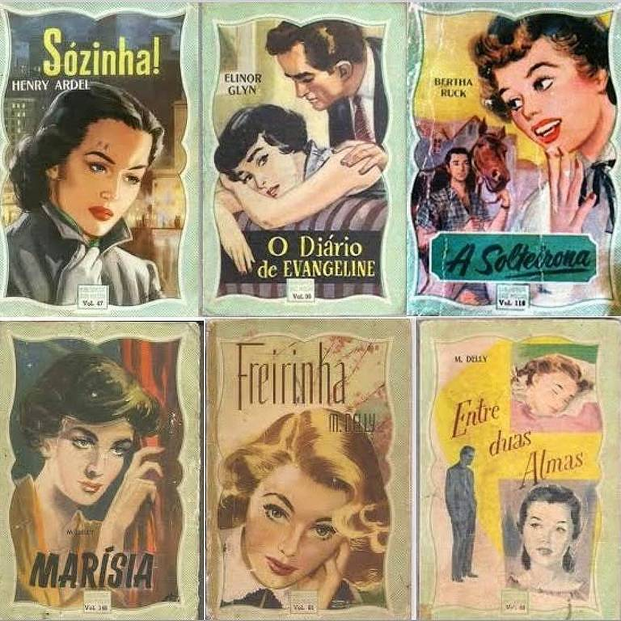
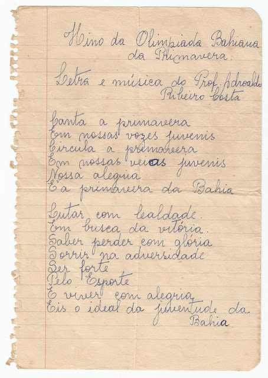
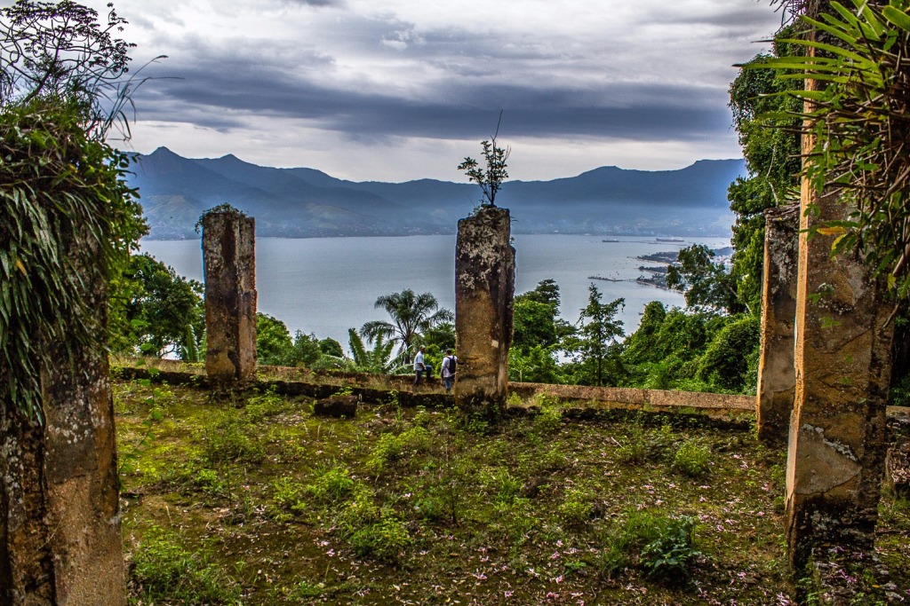

Novo artigo: "A História do Candomblé no Brasil
5 imagens adicionadas em "Galeria Afroindígena
Atualização: Correções nos artigos de imprensa negra
Nenhuma nova notificação...
Idioma
Modo Claro/Escuro
Acessibilidade
Entrar
Cadastrar
Culturas


Pessoas Importantes


Literatura

Arquitetura
Anos 60 e 70
Diversos